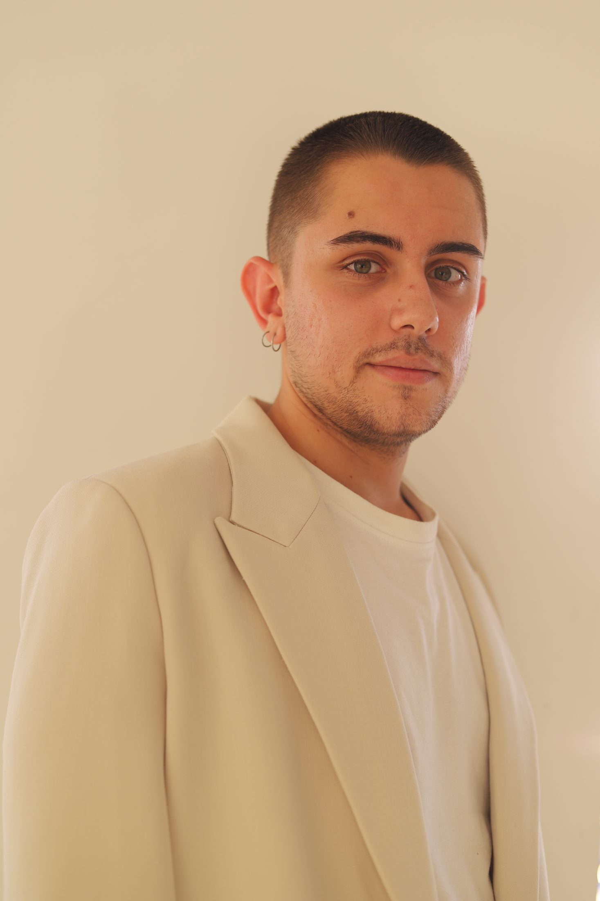

Tony Arroyo
Director de arte y diseñador gráfico
Madrid, España
Sobre mí
(01)
Soy Tony, director de arte y diseñador gráfico. Vivo y trabajo en Madrid.
Llegué al diseño por la fotografía, y creo que se nota. Antes de pensar en una tipografía o en un color casi siempre hay una imagen: una luz concreta, un gesto, una textura que pide quedarse.
Trabajo con marcas de moda, lifestyle y proyectos culturales, y me gusta estar en todo el recorrido — el concepto, la dirección del shooting, el diseño y la edición final. No sabría separarlo.
Lo que busco en cada proyecto es una atmósfera propia. Menos un estilo que una mirada: un universo visual que se reconozca aunque no lleve mi nombre.
Experiencia /
Freelance
Director de arte
4AM Studio
Creative director
GoodNews Coffee
Director de arte y diseñador gráfico
La Condesa
Fotografía de moda
15 Segundos
Creative assistant y fotografía
Formación /
Curso de Dirección de Arte en Publicidad
CEI Escuela de Diseño y Marketing, Madrid
Grado en Diseño Gráfico + Especialización en Marketing
ESADA, Granada
Grado en Bellas Artes
Universidad Complutense de Madrid
Servicios /
Dirección de arte
Fotografía
Diseño gráfico
Identidad visual
Diseño editorial
Packaging
Ilustración
Herramientas /
Photoshop, Illustrator, InDesign
Premiere, CapCut
Idiomas /
Español
Nativo
Inglés
B2
Contacto /
